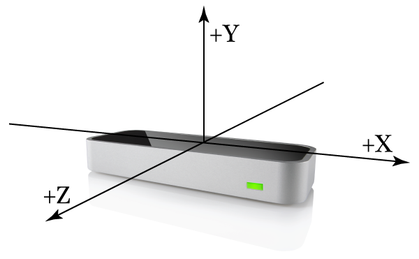
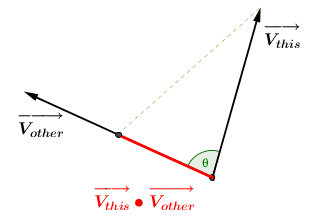
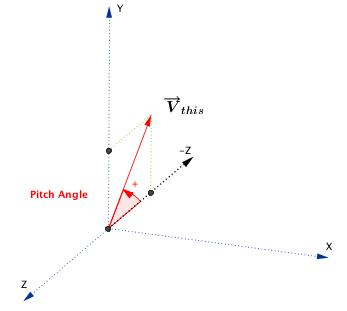
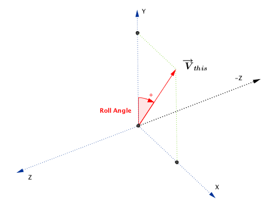

LeapVector Class Reference
| Inherits from | NSObject |
| Declared in | LeapObjectiveC.h |
Overview
The LeapVector class represents a three-component mathematical vector or point
such as a direction or position in three-dimensional space.
The Leap software employs a right-handed Cartesian coordinate system.
Values given are in units of real-world millimeters. The origin is centered
at the center of the Leap device. The x- and z-axes lie in the horizontal
plane, with the x-axis running parallel to the long edge of the device.
The y-axis is vertical, with positive values increasing upwards (in contrast
to the downward orientation of most computer graphics coordinate systems).
The z-axis has positive values increasing away from the computer screen.

Tasks
-
– initWithX:y:z:Creates a new LeapVector with the specified component values.
-
– initWithVector:Copies the specified LeapVector.
-
– magnitudeThe magnitude, or length, of this vector.
-
– magnitudeSquaredThe square of the magnitude, or length, of this vector.
-
– distanceTo:The distance between the point represented by this LeapVector
object and a point represented by the specified LeapVector object. -
– angleTo:The angle between this vector and the specified vector in radians.
-
– pitchThe pitch angle in radians.
-
– rollThe roll angle in radians.
-
– yawThe yaw angle in radians.
-
– plus:Adds two vectors.
-
– minus:Subtract a vector from this vector.
-
– negateNegate this vector.
-
– times:Multiply this vector by a number.
-
– divide:Divide this vector by a number.
-
– equals:Checks LeapVector equality.
-
– dot:The dot product of this vector with another vector.
-
– cross:The cross product of this vector and the specified vector.
-
– normalizedA normalized copy of this vector.
-
– toNSArrayReturns an NSArray object containing the vector components in the
order: x, y, z. -
– toFloatPointerReturns an NSMutableData object containing the vector components as
consecutive floating point values. -
+ zeroThe zero vector: (0, 0, 0)
-
+ xAxisThe x-axis unit vector: (1, 0, 0).
-
+ yAxisThe y-axis unit vector: (0, 1, 0).
-
+ zAxisThe z-axis unit vector: (0, 0, 1).
-
+ leftThe unit vector pointing left along the negative x-axis: (-1, 0, 0).
-
+ rightThe unit vector pointing right along the positive x-axis: (1, 0, 0).
-
+ downThe unit vector pointing down along the negative y-axis: (0, -1, 0).
-
+ upThe unit vector pointing up along the positive y-axis: (0, 1, 0).
-
+ forwardThe unit vector pointing forward along the negative z-axis: (0, 0, -1).
-
+ backwardThe unit vector pointing backward along the positive z-axis: (0, 0, 1).
-
xThe horizontal component.
property -
yThe vertical component.
property -
zThe depth component.
property
Properties
x
The horizontal component.
@property (nonatomic, assign, readonly) float xAvailability
Since 1.0
Discussion
The horizontal component.
Declared In
LeapObjectiveC.hClass Methods
backward
The unit vector pointing backward along the positive z-axis: (0, 0, 1).
+ (LeapVector *)backwardAvailability
Since 1.0
Discussion
The unit vector pointing backward along the positive z-axis: (0, 0, 1).
LeapVector *backwardVector = [LeapVector backward];
Declared In
LeapObjectiveC.hdown
The unit vector pointing down along the negative y-axis: (0, -1, 0).
+ (LeapVector *)downAvailability
Since 1.0
Discussion
The unit vector pointing down along the negative y-axis: (0, -1, 0).
LeapVector *downVector = [LeapVector down];
Declared In
LeapObjectiveC.hforward
The unit vector pointing forward along the negative z-axis: (0, 0, -1).
+ (LeapVector *)forwardAvailability
Since 1.0
Discussion
The unit vector pointing forward along the negative z-axis: (0, 0, -1).
LeapVector *forwardVector = [LeapVector forward];
Declared In
LeapObjectiveC.hleft
The unit vector pointing left along the negative x-axis: (-1, 0, 0).
+ (LeapVector *)leftAvailability
Since 1.0
Discussion
The unit vector pointing left along the negative x-axis: (-1, 0, 0).
LeapVector *leftVector = [LeapVector left];
Declared In
LeapObjectiveC.hright
The unit vector pointing right along the positive x-axis: (1, 0, 0).
+ (LeapVector *)rightAvailability
Since 1.0
Discussion
The unit vector pointing right along the positive x-axis: (1, 0, 0).
LeapVector *rightVector = [LeapVector right];
Declared In
LeapObjectiveC.hup
The unit vector pointing up along the positive y-axis: (0, 1, 0).
+ (LeapVector *)upAvailability
Since 1.0
Discussion
The unit vector pointing up along the positive y-axis: (0, 1, 0).
LeapVector *upVector = [LeapVector up];
Declared In
LeapObjectiveC.hxAxis
The x-axis unit vector: (1, 0, 0).
+ (LeapVector *)xAxisAvailability
Since 1.0
Discussion
The x-axis unit vector: (1, 0, 0).
LeapVector *xAxisVector = [LeapVector xAxis];
Declared In
LeapObjectiveC.hyAxis
The y-axis unit vector: (0, 1, 0).
+ (LeapVector *)yAxisAvailability
Since 1.0
Discussion
The y-axis unit vector: (0, 1, 0).
LeapVector *yAxisVector = [LeapVector yAxis];
Declared In
LeapObjectiveC.hInstance Methods
angleTo:
The angle between this vector and the specified vector in radians.
- (float)angleTo:(const LeapVector *)vectorParameters
- vector
A LeapVector object.
Return Value
The angle between this vector and the specified vector in radians.
Availability
Since 1.0
Discussion
The angle between this vector and the specified vector in radians.
float angleInRadians = [[LeapVector xAxis] angleTo:[LeapVector yAxis]];
// angleInRadians = PI/2 (90 degrees)
The angle is measured in the plane formed by the two vectors. The
angle returned is always the smaller of the two conjugate angles.
Thus [A angleTo:B] == [B angleTo:A] and is always a positive
value less than or equal to pi radians (180 degrees).
If either vector has zero length, then this function returns zero.

Declared In
LeapObjectiveC.hcross:
The cross product of this vector and the specified vector.
- (LeapVector *)cross:(const LeapVector *)vectorParameters
- vector
A LeapVector object.
Return Value
The cross product of this vector and the specified vector.
Availability
Since 1.0
Discussion
The cross product of this vector and the specified vector.
LeapVector *crossProduct = [thisVector cross:thatVector];
The cross product is a vector orthogonal to both original vectors.
It has a magnitude equal to the area of a parallelogram having the
two vectors as sides. The direction of the returned vector is
determined by the right-hand rule. Thus [A cross:B] ==
[[B negate] cross:A].

Declared In
LeapObjectiveC.hdistanceTo:
The distance between the point represented by this LeapVector
object and a point represented by the specified LeapVector object.
- (float)distanceTo:(const LeapVector *)vectorParameters
- vector
A LeapVector object.
Return Value
The distance from this point to the specified point.
Availability
Since 1.0
Discussion
The distance between the point represented by this LeapVector
object and a point represented by the specified LeapVector object.
LeapVector *aPoint = [[LeapVector alloc] initWithX:10 y:0 z:0];
LeapVector *origin = [LeapVector zero];
float distance = [origin distanceTo:aPoint]; // distance = 10
Declared In
LeapObjectiveC.hdivide:
Divide this vector by a number.
- (LeapVector *)divide:(float)scalarParameters
- scalar
The scalar divisor;
Return Value
The dividend of this LeapVector divided by a scalar.
Availability
Since 1.0
Discussion
Divide this vector by a number.
LeapVector *quotient = [thisVector divide:2.5];
Declared In
LeapObjectiveC.hdot:
The dot product of this vector with another vector.
- (float)dot:(const LeapVector *)vectorParameters
- vector
A LeapVector object.
Return Value
The dot product of this vector and the specified vector.
Availability
Since 1.0
Discussion
The dot product of this vector with another vector.
float dotProduct = [thisVector dot:thatVector];
The dot product is the magnitude of the projection of this vector
onto the specified vector.

Declared In
LeapObjectiveC.hequals:
Checks LeapVector equality.
- (BOOL)equals:(const LeapVector *)vectorParameters
- vector
The LeapVector to compare.
Return Value
YES, if the LeapVectors are equal.
Availability
Since 1.0
Discussion
Checks LeapVector equality.
bool vectorsAreEqual = [thisVector equals:thatVector];
Vectors are equal if each corresponding component is equal.
Declared In
LeapObjectiveC.hinitWithVector:
Copies the specified LeapVector.
- (id)initWithVector:(const LeapVector *)vectorParameters
- vector
The LeapVector to copy.
Availability
Since 1.0
Discussion
Copies the specified LeapVector.
LeapVector *copiedVector = [[LeapVector alloc] initWithVector:otherVector];
Declared In
LeapObjectiveC.hinitWithX:y:z:
Creates a new LeapVector with the specified component values.
- (id)initWithX:(float)x y:(float)y z:(float)zParameters
- x
The horizontal component.
- y
The vertical component.
- z
The depth component.
Availability
Since 1.0
Discussion
Creates a new LeapVector with the specified component values.
LeapVector *newVector = [[LeapVector alloc] initWithX:0.5 y:200.3 z:67];
Declared In
LeapObjectiveC.hmagnitude
The magnitude, or length, of this vector.
- (float)magnitudeReturn Value
The length of this vector.
Availability
Since 1.0
Discussion
The magnitude, or length, of this vector.
float length = thisVector.magnitude;
The magnitude is the L2 norm, or Euclidean distance between the origin and
the point represented by the (x, y, z) components of this LeapVector object.
Declared In
LeapObjectiveC.hmagnitudeSquared
The square of the magnitude, or length, of this vector.
- (float)magnitudeSquaredReturn Value
The square of the length of this vector.
Availability
Since 1.0
Discussion
The square of the magnitude, or length, of this vector.
float lengthSquared = thisVector.magnitudeSquared;
Declared In
LeapObjectiveC.hminus:
Subtract a vector from this vector.
- (LeapVector *)minus:(const LeapVector *)vectorParameters
- vector
the LeapVector subtrahend.
Return Value
the difference between the two LeapVectors.
Availability
Since 1.0
Discussion
Subtract a vector from this vector.
LeapVector *difference = [thisVector minus:thatVector];
Declared In
LeapObjectiveC.hnegate
Negate this vector.
- (LeapVector *)negateReturn Value
The negation of this LeapVector.
Availability
Since 1.0
Discussion
Negate this vector.
LeapVector *negation = thisVector.negate;
Declared In
LeapObjectiveC.hnormalized
A normalized copy of this vector.
- (LeapVector *)normalizedReturn Value
A LeapVector object with a length of one, pointing in the same
direction as this Vector object.
Availability
Since 1.0
Discussion
A normalized copy of this vector.
LeapVector *normalizedVector = otherVector.normalized;
A normalized vector has the same direction as the original vector,
but with a length of one.
Declared In
LeapObjectiveC.hpitch
The pitch angle in radians.
- (float)pitchReturn Value
The angle of this vector above or below the horizon (x-z plane).
Availability
Since 1.0
Discussion
The pitch angle in radians.
float pitchInRadians = thisVector.pitch;
Pitch is the angle between the negative z-axis and the projection of
the vector onto the y-z plane. In other words, pitch represents rotation
around the x-axis.
If the vector points upward, the returned angle is between 0 and pi radians
(180 degrees); if it points downward, the angle is between 0 and -pi radians.

Declared In
LeapObjectiveC.hplus:
Adds two vectors.
- (LeapVector *)plus:(const LeapVector *)vectorParameters
- vector
The LeapVector addend.
Return Value
The sum of the two LeapVectors.
Availability
Since 1.0
Discussion
Adds two vectors.
LeapVector *sum = [thisVector plus:thatVector];
Declared In
LeapObjectiveC.hroll
The roll angle in radians.
- (float)rollReturn Value
The angle of this vector to the right or left of the y-axis.
Availability
Since 1.0
Discussion
The roll angle in radians.
float rollInRadians = thatVector.roll;
Roll is the angle between the y-axis and the projection of
the vector onto the x-y plane. In other words, roll represents rotation
around the z-axis. If the vector points to the left of the y-axis,
then the returned angle is between 0 and pi radians (180 degrees);
if it points to the right, the angle is between 0 and -pi radians.

Use this function to get roll angle of the plane to which this vector is a
normal. For example, if this vector represents the normal to the palm,
then this function returns the tilt or roll of the palm plane compared
to the horizontal (x-z) plane.
Declared In
LeapObjectiveC.htimes:
Multiply this vector by a number.
- (LeapVector *)times:(float)scalarParameters
- scalar
The scalar factor.
Return Value
The product of this LeapVector and a scalar.
Availability
Since 1.0
Discussion
Multiply this vector by a number.
LeapVector *product = [thisVector times:5.0];
Declared In
LeapObjectiveC.htoFloatPointer
Returns an NSMutableData object containing the vector components as
consecutive floating point values.
- (NSMutableData *)toFloatPointerAvailability
Since 1.0
Discussion
Returns an NSMutableData object containing the vector components as
consecutive floating point values.
NSData *vectorData = thisVector.toFloatPointer;
float x, y, z;
[vectorData getBytes:&x length:sizeof(float)];
[vectorData getBytes:&y length:sizeof(float)];
[vectorData getBytes:&z length:sizeof(float)];
//Or access as an array of float:
float array[3];
[vectorData getBytes:&array length:sizeof(float) * 3];
x = array[0];
y = array[1];
z = array[2];
Declared In
LeapObjectiveC.htoNSArray
Returns an NSArray object containing the vector components in the
order: x, y, z.
- (NSArray *)toNSArrayAvailability
Since 1.0
Discussion
Returns an NSArray object containing the vector components in the
order: x, y, z.
NSArray *vectorArray = thisVector.toNSArray;
Declared In
LeapObjectiveC.hyaw
The yaw angle in radians.
- (float)yawReturn Value
The angle of this vector to the right or left of the negative z-axis.
Availability
Since 1.0
Discussion
The yaw angle in radians.
float yawInRadians = thisVector.yaw;
Yaw is the angle between the negative z-axis and the projection of
the vector onto the x-z plane. In other words, yaw represents rotation
around the y-axis. If the vector points to the right of the negative z-axis,
then the returned angle is between 0 and pi radians (180 degrees);
if it points to the left, the angle is between 0 and -pi radians.

Declared In
LeapObjectiveC.h